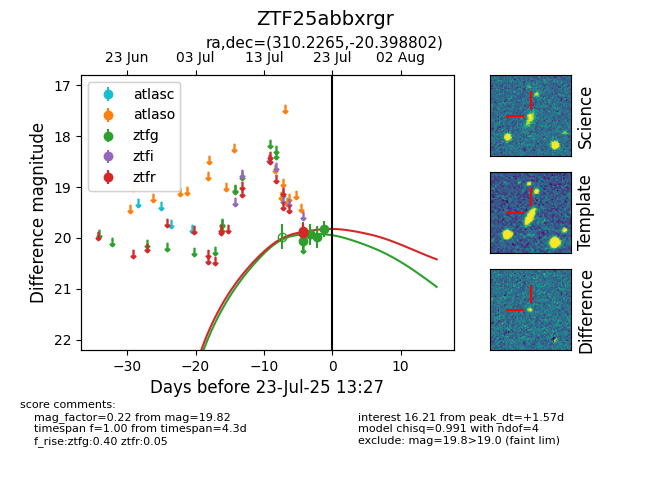

Target ZTF25abbxrgr at 2025-07-23 13:27, see:
FINK: fink-portal.org/ZTF25abbxrgr
Lasair: lasair-ztf.lsst.ac.uk/objects/ZTF25abbxrgr
ALeRCE: alerce.online/object/ZTF25abbxrgr
alt names
ZTF25abbxrgr (ztf,fink)
coordinates:
equatorial (ra, dec) = (310.2265,-20.39880)
galactic (l, b) = (25.1509,-32.84690)
photometry
last ztfg=19.82, ztfr=19.91
6 ztfg, 2 ztfr detections
